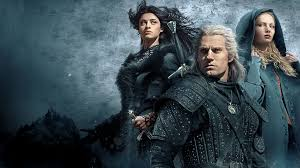

Ben Osman Vural 22 yaşımdayım. Fırat Üniversitesi elektrik elektronik mühendisliği öğrencisiyim.
Hayalim olan yazılıma patika ailesini keşfederek başladım. Yazılım dışında kitap okumayı,film izlemeyi,
müzik dinlemeyi ve tenis oynamayı severim. Patika ailesinde harika şeyler öğrendim ve öğrenmeye
devam ediyorum. Siz de gelin!
